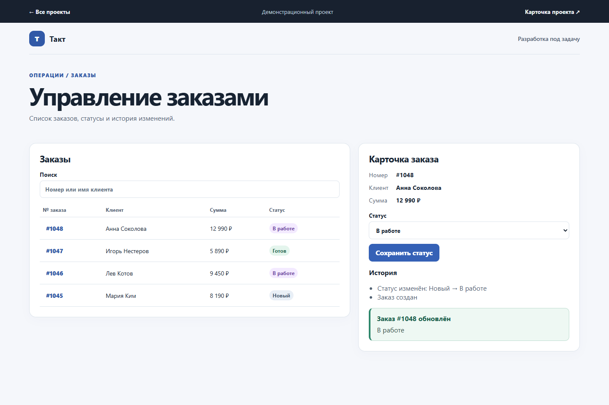

Разработка под задачу / Демонстрационный проект
Панель управления заказами
Операторам нужен общий список заказов с быстрым доступом к данным и статусам.
Что реализовано
Собрал поиск, список, карточку заказа, смену статуса и запись в историю.
Что показать клиенту
Откройте заказ №1048, выберите статус и сохраните. Изменение появится в списке и истории.

Проект работает в браузере на тестовых данных. Сторонний аналог на GitHub ↗

